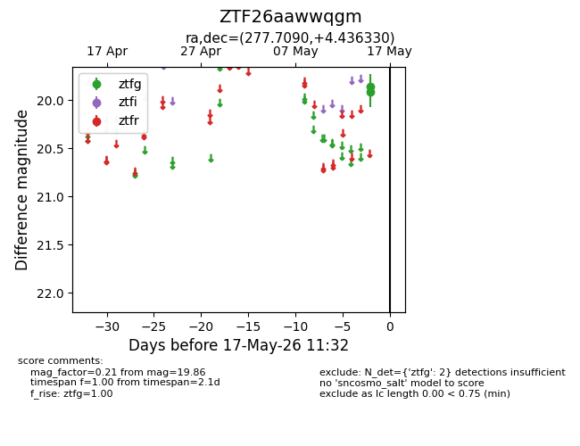
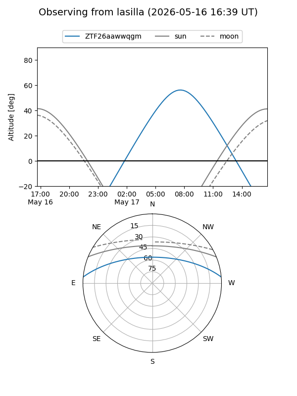
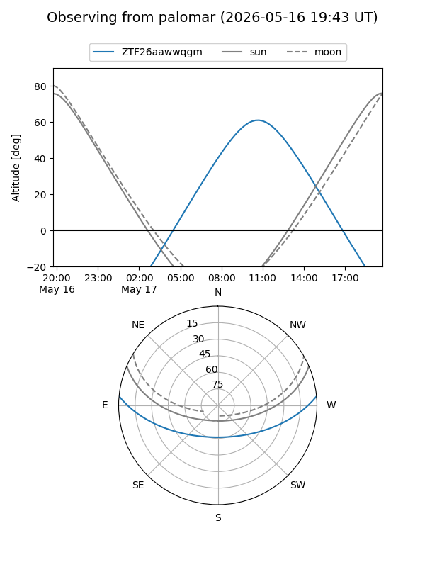

ZTF26aawwqgm
Target ZTF26aawwqgm at 2026-05-17 11:35
Aliases and brokers:
FINK: link
Lasair: link
ALeRCE: link
alt names
ZTF26aawwqgm (ztf,fink_ztf)
Coordinates:
equatorial (ra, dec) = 277.7090,+4.43633
equatorial (HMS+DMS) = 18:30:50.17,+04:26:10.79
galactic (l, b) = (34.5489,+6.59941)
Flags:
Photometry:
last ztfg=19.86
2 ztfg detections
Lightcurve

Visibility


Additional plots